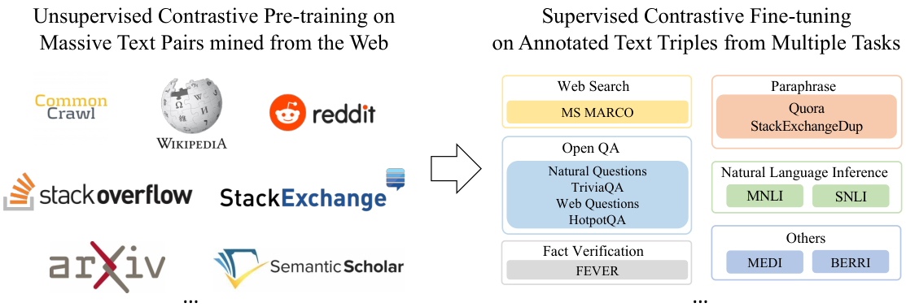
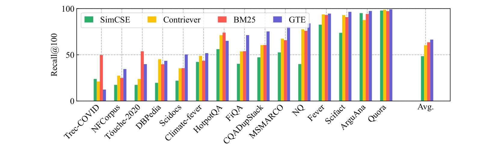

原文: arXiv:2308.03281（v1, 2023-08-07） 说明: 本文为论文全文中文翻译，公式与表格编号尽量与原文一致；数值表原样保留数字，图仅保留标题/说明的中译并配原图。
迈向通用文本嵌入：多阶段对比学习¶
Towards General Text Embeddings with Multi-stage Contrastive Learning
Zehan Li, Xin Zhang, Yanzhao Zhang, Dingkun Long, Pengjun Xie, Meishan Zhang
阿里巴巴集团（Alibaba Group）
{lizehan.lzh, linzhang.zx, zhangyanzhao.zyz, dingkun.ldk, pengjun.xpj}@alibaba-inc.com
摘要（Abstract）¶
我们提出 GTE，一个用多阶段对比学习训练的通用文本嵌入模型。顺应近来"将各类 NLP 任务统一到单一格式"的趋势，我们在来自多源的多样化数据集混合上做对比学习，训练出一个统一的文本嵌入模型。通过在无监督预训练与监督微调两个阶段都大幅增加训练数据量，我们相较已有嵌入模型取得显著性能提升。值得注意的是：即使参数量仅为相对适中的 110M，GTE_base 也超越了 OpenAI 提供的黑盒嵌入 API，并在大规模文本嵌入基准（MTEB）上超过体量大 10 倍的文本嵌入模型。此外，无需对每种编程语言单独微调，我们的模型仅把代码当作文本处理，就超过了此前同规模的最佳代码检索器。总之，我们的模型通过有效利用多阶段对比学习取得了出色结果，提供了一个强大、高效、可广泛应用于各类 NLP 与代码相关任务的文本嵌入模型。1
引言（Introduction）¶
文本嵌入已成为许多自然语言处理任务中不可或缺的组件，如文本分类、文本检索、问答与对话系统。这些嵌入模型用低维向量表示文本，并通过向量运算刻画其相似度。近期大语言模型（LLM）的出现，引发了人们对"基于文本嵌入、并整合 LLM 推理与理解能力的检索增强系统"的浓厚兴趣。因此，通用文本表示在工业界与学术界都日益受到关注。
由于自然语言的格式、领域与下游应用高度多样，"用统一模型解决众多下游任务"一直是长期追求。预训练语言模型的出现，为训练这样的通用模型进一步打开了可能。然而在文本表示研究领域，此前的文本嵌入模型大多聚焦特定任务，其为单一任务定制的训练策略或模型在其它场景未必最优。例如 SimCSE 在对称文本对上训练，在文本检索任务上表现受限；同样，某些专为稠密检索设计的表示模型在句子语义相似度任务上表现不佳。近来，研究重心转向：利用海量无标注网页数据做无监督对比预训练，再配合任务特定数据、prompt 或指令，以缓解微调阶段的任务冲突，从而构建更全面的文本表示模型。此外，MTEB 等基准的引入，为评估文本表示模型的通用性建立了稳固基础。然而现有研究的一大局限在于：预训练依赖内部私有数据，形成了使用预训练权重或 API 的瓶颈；同时为每个任务专门设计 prompt 也需要额外人力。
本文提出一种直接的方法，仅用开源数据、通过对比学习构建通用文本嵌入（GTE）模型，如图 1 所示。具体地，我们先从多种数据源收集大规模的无监督文本对做对比预训练。令人惊讶的是，在此数据上预训练的模型表现出色：在零样本文本检索任务上超过 BM25 与 E5，并在 MTEB 基准上超过许多监督模型。为进一步提升所学表示的质量，我们从多个来源获取带人工标注的高质量文本对做对比微调。监督微调后，我们这个基于 BERT（110M）的模型已经超过 OpenAI 当前的商用嵌入 API，并在 MTEB 排名靠前。此外，由于我们的模型也用代码数据训练，我们在覆盖六种编程语言的 CodeSearchNet 上评测其代码检索能力：即使不在每个子集上做语言特定微调，我们的模型也显著超过为每种语言分别微调过的同规模 SOTA 代码检索器。
在本文其余部分，我们详述所用数据源与训练配置，随后给出在广受认可的文本嵌入基准上的评测结果，并与此前为各单一任务专门优化的 SOTA 基线对比。我们的模型凭借更多样的训练数据混合，持续表现优异，或至少可比于更大的模型。我们希望本模型能作为文本与代码嵌入研究社区的一个强基线。

图 1：训练本文文本嵌入模型所用的多阶段对比学习流程示意。左侧为"从网页挖掘的海量文本对上的无监督对比预训练"（数据源含 Common Crawl、Wikipedia、Reddit、StackOverflow、StackExchange、arXiv、Semantic Scholar 等）；右侧为"多任务标注文本三元组上的监督对比微调"（含 Web Search 的 MS MARCO、Open QA 的 NQ/TriviaQA/WebQuestions/HotpotQA、Paraphrase 的 Quora/StackExchangeDup、NLI 的 MNLI/SNLI、Fact Verification 的 FEVER，以及 MEDI、BERRI 等）。
相关工作（Related Work）¶
文本嵌入是对不同长度文本的低维向量表示，在众多 NLP 任务中至关重要。相较 TF-IDF 等高维稀疏表示，稠密文本嵌入能缓解词汇不匹配问题，提升检索与匹配效率。
以 BERT、GPT 为代表的预训练语言模型在各类 NLP 任务上取得显著成功。然而，由于掩码语言建模（MLM）目标带来的各向异性嵌入空间，从预训练语言模型直接抽取高质量句向量颇具挑战。为此，后续研究提出了多种方法：监督微调、normalizing flow、whitening、无监督对比学习等。这些工作主要聚焦提升语义文本相似度（STS）任务，其中两个句子格式相似。
另一条研究线关注文本检索问题，其中 query 与文档通常呈非对称关系。此场景下的双编码器架构需用正负对训练。Lee 等提出 Inverse Cloze Task（ICT）作为生成稠密检索器的自监督预训练方法：从段落中裁出随机句子来构造伪 query-文档对。Chang 等利用维基百科的链接结构引入更多预训练监督信号。类似地，REALM 提出联合训练：稠密检索器与语言模型同时训练，语言模型的学习信号来自 MLM，并通过检索步反向传播。近期的 Contriever、coCondenser 表明通过随机段落裁剪构造正对，效果优于 ICT。基于 Chang 等的思路，也有研究用网页链接拓扑构造更高质量的正对做检索器预训练，该技术在零样本场景有效。此外，稠密检索领域还有大量研究通过设计辅助预训练任务来增强预训练语言模型的表示能力。
前两条研究线可概括为"为一段文本学习向量表示"，其区别在于下游任务类型。近来一些研究通过大规模对比学习与基于 prompt 的学习来构建统一文本表示模型。同时，也有研究致力于构造评测数据集，以更好评估文本表示模型在不同任务与领域上的稳定性：BEIR 汇集大量不同领域的检索任务，评估稠密检索器在零样本场景的鲁棒性；MTEB 覆盖跨七个类别的 56 个以上数据集，对文本嵌入模型做全面评估。
本研究旨在通过多阶段训练构建通用文本嵌入模型。在无监督对比学习的初始阶段，我们用多源公开数据生成弱监督相关文本对。与此前工作（Wang 等，2022b，即 E5）不同，我们完全使用开源数据，且不采用任何过滤或清洗方法。 在大规模文本对上预训练能有效提升文本表示模型的领域泛化，并弥合 MLM 训练目标与对比学习表示目标之间的差距，使语言模型更适合文本表示任务。在监督微调阶段，我们的训练数据混合更加多样，以进一步增强模型的通用性。此外，我们的模型不引入任务特定 prompt，从而提升可复现性与易用性。
方法（Approach）¶
我们模型的训练过程包含两个阶段：无监督预训练与监督微调。两阶段均采用对比学习目标。下文先介绍模型的基本框架，再讨论两阶段训练数据的来源与构造方法，最后给出训练中用于增强性能的一些特殊优化策略。
模型架构（Model Architecture）¶
我们嵌入模型的骨干是一个深层 Transformer 编码器，可用 BERT 等预训练语言模型初始化。模型遵循标准的双编码器架构，在语言模型产出的上下文化 token 表示之上做 mean pooling。形式化地，给定由 \(n\) 个 token 组成的文本 \(x=(x_1,\dots,x_n)\)，嵌入模型 \(E\) 将其转为低维稠密向量 \(\mathbf{x}=E(x)\in\mathbb{R}^d\)。为实现 \(E\)，我们先用语言模型得到深层上下文化 token 表示：
然后沿第一维做轻量的 mean pooling 得到文本表示：
文本表示通过对比目标学习，将语义相关的文本对与不相关的区分开。此训练需要正负对，形式为 \((q, d^+, d^-)\)。对于 query \(q\)、相关文档 \(d^+\)、一组不相关文档 \(D^-=\{d^-_1,\dots,d^-_n\}\)，一个常用的对比目标是 InfoNCE 损失：
其中 \(s(q,d)\) 通过 \(\mathbf{q}=E(q)\) 与 \(\mathbf{d}=E(d)\) 之间的向量距离来估计两段文本 \(q\)、\(d\) 的相似度。
为获得可广泛应用的高质量文本嵌入，我们从多种格式与领域编制了大规模文本对数据集，并以改进的对比损失做多阶段训练。
无监督预训练数据（Unsupervised Pre-training Data）¶
弱监督的文本相关性数据在公开网页资源中唾手可得，例如 QA 论坛上 query 与答案之间的内在关联。这类数据可大规模收集而无需人工标注，从而高效辅助训练文本表示模型。受此前工作启发，我们的模型首先在从多源抽取的自然文本对上预训练。为保证嵌入模型的通用性，我们从多种资源抽取文本对，包括网页（如 CommonCrawl、ClueWeb）、科学论文（如 arXiv、SemanticScholar）、社区 QA 论坛（如 StackExchange）、社交媒体（如 Reddit）、知识库（如 Wikipedia、DBPedia）与代码仓库（如 StackOverflow、GitHub）。此外，我们利用某些数据集中的超链接来辅助抽取文本对。表 2 给出了不同来源的文本对格式示例，更多数据收集细节见附录 A。总计我们在无监督预训练阶段使用了约 8 亿（∼800M） 文本对。简单统计与数据分布见表 1。
监督微调数据（Supervised Fine-tuning Data）¶
在监督微调阶段，我们使用相对较小、带人工标注（两段文本之间相关性）的数据集，并可选地用额外检索器挖掘的难负例来构成文本三元组。为同时处理对称任务（如 STS）与非对称任务（如段落检索），我们从大量任务与领域收集数据，包括网页搜索（如 MS MARCO）、开放域 QA（如 NQ）、NLI（如 SNLI）、事实核查（如 FEVER）、复述（如 Quora）。微调阶段共使用约 300 万（∼3M） 文本对，这是此前多项研究所用训练数据的组合。更多细节见附录 A。
表 1：预训练数据统计。
| 来源（Source） | 数据集数 | 占比（Prop.） | 规模（Size） |
|---|---|---|---|
| Web Page（网页） | 3 | 18.7% | 147M |
| Academic Paper（学术论文） | 5 | 5.7% | 45M |
| Hyperlink（超链接） | 4 | 13.4% | 106M |
| Social Media（社交媒体） | 2 | 41.5% | 327M |
| Knowledge Base（知识库） | 2 | 4.8% | 38M |
| Community QA（社区 QA） | 7 | 1.5% | 12M |
| News（新闻） | 5 | 0.4% | 3M |
| Code（代码） | 2 | 2.5% | 20M |
| Others（其它） | 3 | 11.6% | 91M |
| 总计（Total） | 33 | 100% | 788M |
表 2：预训练数据中挖掘的（query, document）对示例。
| 任务类型 | 文本对格式 | Query 示例 | Doc 示例 |
|---|---|---|---|
| Web Page | (title, body) | Providence Real Estate | Providence Homes for Sale | Founded by Roger Williams in 1636, Providence is recognized as one of the country's oldest cities… |
| Academic Paper | (title, abstract) | Polymer Quantum Mechanics and its Continuum Limit | A rather non-standard quantum representation of the canonical commutation relations… |
| Hyperlink | (citation, reference) | After the championship in 1996, the PGA of America raised its stake to 50%… | Pebble Beach Golf Links The largest margin of victory ever in a major championship… |
| Social Media | (post, comment) | Pretty sure any team with Lebron James will be a playoff contender… | I was being sarcastic and making fun of the East… |
| Knowledge Base | (entity, description) | Animation | Animation is the process of creating the illusion of motion… |
| Community QA | (question, answer) | How the human species evolved? | A tough question as it overlaps science and theology… |
| News | (summary, content) | Nepalese Opposition Welcomes Return of Parliament | Nepal's opposition alliance formally calls off weeks of pro-democracy protests… |
| Code | (text, code) | SetMaxRecords sets the MaxRecords field's value. | func (s *DescribeSnapshotCopyGrantsInput) SetMaxRecords… |
训练细节（Training Details）¶
数据采样（Data Sampling） 在无监督预训练的初始阶段，不同数据源的训练样本数往往差异很大。为处理这种不平衡，我们用多项式分布按各子集规模采样数据 batch。设整个预训练数据 \(D\) 由 \(m\) 个不同子集 \(\{D_1,\dots,D_m\}\) 组成，各子集大小记为 \(n_i=|D_i|\)，则每次训练迭代从第 \(i\) 个子集 \(D_i\) 采样的概率为：
本文取 \(\alpha=0.5\)。此外，为防止模型仅学到任务特定的判别捷径，我们保证同一 batch 内的所有训练样本都来自同一任务。
改进的对比损失（Improved Contrastive Loss） 使用对比目标时，人们通常复用 in-batch 文档作为负例候选以提升训练效率。本文采用一种改进的对比学习目标，它是双向的，并同时用 in-batch 的 query 与 document 扩大负例集合。这可视为 Radford 等（2021）、Ren 等（2021）、Moiseev 等（2023）所提损失变体的组合。考虑一批正文本对样本 \(B=\{(q_1,d_1),(q_2,d_2),\dots,(q_n,d_n)\}\)，我们使用如下改进对比损失：
配分函数为：
其中前两项用于 query→document 对比，后两项用于反向的 document→query 对比。本文以余弦相似度作为距离度量：
温度 \(\tau\) 在本文固定为 0.01。
训练与评测（Training and Evaluation） 嵌入模型训练分两阶段。第一阶段为仅含 in-batch 负例的对比预训练，此时使用大 batch size 至关重要：更多负例能缩小训练与推理的差距，并更好地逼近底层学习目标。为此，我们在预训练时把最大序列长度限制为 128，并将负例的使用分布到所有 GPU 上。同时联合使用 fp16 自动混合精度、DeepSpeed ZeRO stage 1、梯度检查点等技术，以降低显存、将 batch size 扩到上万级。预训练跑 50,000 步，大致相当于在整个预训练数据上过一个 epoch。我们仅调整学习率以确保较大模型收敛；使用 AdamW 优化器、线性学习率衰减，并在前 5% 步做 warm-up。我们在三种规模上做实验：small、base、large，分别用 small 版 MiniLM、base 版与 large 版 BERT 初始化，详见表 3。
第二阶段为带监督数据与难负例的对比微调，此时不必用大 batch，因为难负例已能对学习目标提供可靠的梯度估计。因此采用全局 batch size 128、train group size 16（一个正例，其余为难负例或随机负例）。我们把最大序列长度提到 512 以更好处理长文本。微调时学习率降为原来的十分之一，在收集的数据集上微调一个 epoch。in-batch 文本也按公式 (5) 的增强对比损失作为负例候选。
训练结束后，我们直接取最后一个 checkpoint 评测。模型训练用至多 8 张 80GB 的 NVIDIA A100，评测用至多 8 张 32GB 的 NVIDIA Tesla V100；训练与评测均用 fp16 半精度。
表 3：不同规模模型的预训练配置。
| 模型 | 参数量 | 学习率 | GPU 数 | Batch Size | 基座 LM |
|---|---|---|---|---|---|
| GTE_small | 30M | 3×10⁻⁴ | 2 | 16384 | microsoft/MiniLM-L12-H384-uncased |
| GTE_base | 110M | 2×10⁻⁴ | 4 | 16384 | bert-base-uncased |
| GTE_large | 330M | 5×10⁻⁵ | 8 | 16384 | bert-large-uncased |
实验（Experiments）¶
本节对我们的嵌入模型做广泛评测，并与各任务的 SOTA 模型对比。需要注意，由于不同模型使用不同的内部私有数据预训练、基座语言模型差异也很大，严格的"一对一"对比几乎不可能。我们主要以模型参数量作为性能比较的标准，因为它与推理速度密切相关。
零样本文本分类（Zero-shot Text Classification）¶
评估所学表示质量的一种方法是零样本分类。我们把文本分类重塑为基于嵌入的相似度匹配问题：将输入文本直接转为嵌入，把标签口头化（verbalize）为对应文本得到标签嵌入；用内积度量输入嵌入与标签嵌入的距离，取距离最近的标签作为分类结果。以 SST-2 二分类情感任务为例，我们考虑两种标签口头化方式：vanilla 版直接用情感词 "positive/negative" 表示标签；prompted 版用模糊 prompt 模板，如 "this is an example of positive/negative movie review"。
SST-2 上的零样本分类准确率见表 4。在 vanilla 设置下，我们 110M 的模型已能匹敌 330M 参数、带 prompt 的 E5_large；使用 prompt 策略进一步显著提升结果，缩小与大模型的差距。即使训练时没有显式 prompt 或指令，当标签被格式化为自然语言文本时，我们的模型也能在一定程度上更好地理解标签上下文。
表 4：SST-2 零样本文本分类性能（所有对比模型均为微调版）。
| 模型 | 参数量 | Prompting | 准确率 |
|---|---|---|---|
| E5_base | 110M | 81.3 | |
| E5_large | 330M | 85.3 | |
| cpt-text | 6B | 88.1 | |
| cpt-text | 6B | ✓ | 89.1 |
| GTE_base | 110M | 85.1 | |
| GTE_base | 110M | ✓ | 87.2 |
无监督文本检索（Unsupervised Text Retrieval）¶
文本检索需从大规模候选集中检索最相关文档。我们用 BEIR 作为零样本无监督文本检索的评测基准。BEIR 是一个异构信息检索基准，包含不同格式、不同领域的检索任务，我们用其中公开的 15 个数据集评测。我们将无监督预训练 checkpoint 与近期无监督稠密检索器（如 Contriever、E5）对比。据表 5，我们 base 规模的模型显著超过同规模的 SimCSE、Contriever 与 E5；且在不使用人工监督的情况下即可比肩 E5_large。
表 5：BEIR 基准上不同无监督方法的 nDCG@10。 SimCSE 基于 BERT_base；CPT-S 与 BERT_large 规模相近；基线结果借自 E5 论文。注意 Contriever 用点积作相似度度量，其它模型用余弦。
| 数据集 | BM25 | SimCSE | Contriever | CPT-S | E5_small | E5_base | E5_large | GTE_small | GTE_base | GTE_large |
|---|---|---|---|---|---|---|---|---|---|---|
| MS MARCO | 22.8 | 9.4 | 20.6 | 19.9 | 25.4 | 26.0 | 26.2 | 31.3 | 31.8 | 31.7 |
| Trec-Covid | 65.6 | 26.2 | 27.4 | 52.9 | 52.0 | 61.0 | 61.8 | 61.8 | 64.0 | 64.8 |
| NFCorpus | 32.5 | 9.9 | 31.7 | 32.0 | 29.3 | 35.8 | 33.7 | 34.9 | 36.2 | 38.1 |
| NQ | 32.9 | 11.7 | 25.4 | 51.5 | 37.3 | 39.0 | 41.7 | 32.0 | 35.3 | 34.5 |
| HotpotQA | 60.3 | 19.8 | 48.1 | 34.1 | 46.0 | 52.4 | 52.2 | 49.3 | 50.8 | 49.2 |
| FiQA | 23.6 | 9.8 | 24.5 | 38.7 | 38.3 | 40.0 | 43.2 | 37.0 | 36.9 | 40.6 |
| ArguAna | 31.5 | 38.3 | 37.9 | 21.0 | 42.5 | 42.2 | 44.4 | 41.6 | 41.0 | 41.3 |
| Touche-2020 | 36.7 | 8.9 | 19.3 | 68.1 | 19.9 | 16.9 | 19.8 | 17.7 | 18.2 | 18.5 |
| CQADupStack | 29.9 | 13.2 | 28.4 | 27.2 | 35.0 | 35.4 | 38.9 | 38.1 | 39.9 | 39.8 |
| Quora | 78.9 | 78.0 | 83.5 | 57.1 | 85.8 | 85.7 | 86.1 | 86.1 | 85.0 | 84.8 |
| DBPedia | 31.3 | 15.0 | 29.2 | 15.8 | 34.5 | 35.4 | 37.1 | 33.5 | 33.2 | 33.6 |
| Scidocs | 15.8 | 5.5 | 14.9 | 65.4 | 19.9 | 21.1 | 21.8 | 21.5 | 22.5 | 22.7 |
| Fever | 75.3 | 21.1 | 68.2 | — | 62.5 | 63.4 | 68.6 | 71.3 | 72.7 | 70.5 |
| Climate-Fever | 21.3 | 11.8 | 15.5 | — | 14.5 | 15.4 | 15.7 | 21.4 | 21.0 | 25.4 |
| Scifact | 66.5 | 25.7 | 64.9 | — | 68.5 | 73.7 | 72.3 | 72.7 | 74.1 | 74.1 |
| 平均 | 41.7 | 20.3 | 36.0 | — | 40.8 | 42.9 | 44.2 | 43.4 | 44.2 | 44.6 |

图 2：在 BEIR 上无监督文本检索方法的 Recall@100。将 GTE_base（基于 BERT_base、未用任何标注数据）与 SimCSE（基于 RoBERTa_large）、Contriever（基于 BERT_base）、BM25 对比，基线结果借自 Contriever 论文（相似度用点积）。
大规模文本嵌入基准（MTEB）¶
MTEB 是一个综合性的半监督基准，评测中含少量监督数据。本文评测英文子集，覆盖跨七个不同任务的 56 个英文数据集：文本分类（Class.）、文本聚类（Clust.）、成对分类（Pair.）、文本重排（Rerank.）、文本检索（Retr.）、语义文本相似度（STS）与摘要（Summ.）。相应评测指标分别为 accuracy、v-measure、average precision、MAP、nDCG@10、Spearman 系数。任务细节见附录 B。
我们考虑两种设置：无监督设置（模型用无标注数据训练）与监督设置（用高质量人工标注数据微调）。强基线结果见表 6。在无监督设置下，我们的模型在所有考察任务上都大幅超过此前最佳的 E5，且未使用任务特定 prompt——这归功于纳入了更多训练数据格式与多种自监督信号来源。值得注意的是，我们的无监督预训练模型进一步缩小了与更大监督基线（如 GTR、Sentence-T5）的差距。在监督设置下，尽管模型规模适中，我们仍大幅超过 OpenAI 的结果：GTE_small 可比肩体量大 10 倍的 E5_large；GTE_large 在 MTEB 上创下新 SOTA，平均比多任务指令微调嵌入模型 InstructOR_large 高 1.5 分。
表 6：MTEB（英文子集 56 个数据集）结果。 各列为对应任务类别的平均分，末列 Avg 为总平均。
| 模型 | 参数量 | Class.(12) | Clust.(11) | Pair.(3) | Rerank(4) | Retr.(15) | STS(10) | Summ.(1) | Avg(56) |
|---|---|---|---|---|---|---|---|---|---|
| 无监督模型 | |||||||||
| Glove | 120M | 57.3 | 27.7 | 70.9 | 43.3 | 21.6 | 61.9 | 28.9 | 42.0 |
| BERT | 110M | 61.7 | 30.1 | 56.3 | 43.4 | 10.6 | 54.4 | 29.8 | 38.3 |
| SimCSE | 110M | 62.5 | 29.0 | 70.3 | 46.5 | 20.3 | 74.3 | 31.2 | 45.5 |
| E5_small | 30M | 67.0 | 41.7 | 78.2 | 53.1 | 40.8 | 68.8 | 25.2 | 54.2 |
| E5_base | 110M | 67.9 | 43.4 | 79.2 | 53.5 | 42.9 | 69.5 | 24.3 | 55.5 |
| E5_large | 330M | 69.0 | 44.3 | 80.3 | 54.4 | 44.2 | 69.9 | 24.8 | 56.4 |
| GTE_small | 30M | 71.0 | 44.9 | 82.4 | 57.5 | 43.4 | 77.2 | 30.4 | 58.5 |
| GTE_base | 110M | 71.5 | 46.0 | 83.3 | 58.4 | 44.2 | 76.5 | 29.5 | 59.0 |
| GTE_large | 330M | 71.8 | 46.4 | 83.3 | 58.8 | 44.6 | 76.3 | 30.1 | 59.3 |
| 监督模型 | |||||||||
| SimCSE | 110M | 67.3 | 33.4 | 73.7 | 47.5 | 21.8 | 79.1 | 23.3 | 48.7 |
| Contriever | 110M | 66.7 | 41.1 | 82.5 | 53.1 | 41.9 | 76.5 | 30.4 | 56.0 |
| GTR_large | 330M | 67.1 | 41.6 | 85.3 | 55.4 | 47.4 | 78.2 | 29.5 | 58.3 |
| Sentence-T5_large | 330M | 72.3 | 41.7 | 85.0 | 54.0 | 36.7 | 81.8 | 29.6 | 57.1 |
| E5_small | 30M | 71.7 | 39.5 | 85.1 | 54.5 | 46.0 | 80.9 | 31.4 | 58.9 |
| E5_base | 110M | 72.6 | 42.1 | 85.1 | 55.7 | 48.7 | 81.0 | 31.0 | 60.4 |
| E5_large | 330M | 73.1 | 43.3 | 85.9 | 56.5 | 50.0 | 82.1 | 31.0 | 61.4 |
| InstructOR_base | 110M | 72.6 | 42.1 | 85.1 | 55.7 | 48.8 | 81.0 | 31.0 | 60.4 |
| InstructOR_large | 330M | 73.9 | 45.3 | 85.9 | 57.5 | 47.6 | 83.2 | 31.8 | 61.6 |
| OpenAI_ada-001 | n.a. | 70.4 | 37.5 | 76.9 | 49.0 | 18.4 | 78.6 | 26.9 | 49.5 |
| OpenAI_ada-002 | n.a. | 70.9 | 45.9 | 84.9 | 56.3 | 49.3 | 81.0 | 30.8 | 61.0 |
| GTE_small | 30M | 72.3 | 44.9 | 83.5 | 57.7 | 49.5 | 82.1 | 30.4 | 61.4 |
| GTE_base | 110M | 73.0 | 46.1 | 84.3 | 58.6 | 51.2 | 82.3 | 30.7 | 62.4 |
| GTE_large | 330M | 73.3 | 46.8 | 85.0 | 59.1 | 52.2 | 83.4 | 31.7 | 63.1 |
| 更大模型 | |||||||||
| InstructOR_xl | 1.5B | 73.1 | 44.7 | 86.6 | 57.3 | 49.3 | 83.1 | 32.3 | 61.8 |
| GTR_xxl | 4.5B | 67.4 | 42.4 | 86.1 | 56.7 | 48.5 | 78.4 | 30.6 | 59.0 |
| Sentence-T5_xxl | 4.5B | 73.4 | 43.7 | 85.1 | 56.4 | 42.2 | 82.6 | 30.1 | 59.5 |
代码检索（Code Search）¶
编程语言可视为一种特殊文本。为评估我们方法在代码检索上的有效性，我们与其它代码语言模型对比，如 CodeBERT、GraphCodeBERT，以及更晚近、旨在把多种预训练任务整合进统一模型的 UniXcoder；CodeRetriever 从 GraphCodeBERT 初始化，并在启发式挖掘清洗的大规模多模态代码-文本对上预训练。需要强调：基线模型是为每种编程语言分别训练与评测的，而我们的模型直接在所有语言上评测。遵循近期工作，我们主要在更具挑战的设置上评测——代码语料包含 dev 与 test 集的全部代码，而非随机采样的 1k 代码。结果见表 7。令人惊讶的是，我们的模型超过了"先在代码上预训练、再为每种语言分别微调"的模型。这表明：通过扩大数据与算力，语言模型可直接从代码 token 序列学到高质量代码表示，无需引入关于代码结构信息的人类知识。我们观察到 Python 上提升尤为显著，可能因其与自然语言的相似性。我们的模型在跨领域海量文本对上预训练，展现出从文本检索到代码检索的有效跨任务知识迁移。
表 7：CodeSearchNet 结果（挑战设置：从 dev+test 全部候选中找对应代码）。
| 模型 | 参数量 | Ruby | JS | Go | Python | Java | PHP | 平均 |
|---|---|---|---|---|---|---|---|---|
| CodeBERT | 110M×6 | 67.9 | 62.0 | 88.2 | 67.2 | 67.6 | 62.8 | 69.3 |
| GraphCodeBERT | 110M×6 | 70.3 | 64.4 | 89.7 | 69.2 | 69.1 | 64.9 | 71.3 |
| UniXcoder | 110M×6 | 74.0 | 68.4 | 91.5 | 72.0 | 72.6 | 67.6 | 74.4 |
| CodeRetriever | 110M×6 | 77.1 | 71.9 | 92.4 | 75.8 | 76.5 | 70.8 | 77.4 |
| GTE_base | 110M | 76.1 | 73.6 | 88.1 | 95.9 | 80.1 | 85.3 | 83.2 |
分析（Analysis）¶
本节分析影响模型性能的关键因素，并给出一系列消融实验。除非另有说明，实验均用 BERT-base 规模（110M）模型，且所有消融的训练步数与 epoch 保持一致。
缩放的影响（Impact of Scaling）¶
我们在 MTEB 上考察扩大数据源数量、batch size、模型参数对所学文本嵌入质量的影响。
训练数据集数量 我们对预训练所用数据集数量做消融。训练时从所有可用数据集中随机采样子集：第一组仅含按规模排名的 5 个最大数据集；第二组再随机加入 10 个，共 15 个；第三组用全部 33 个。微调方面，初始只用 E5 微调所用的 3 个数据集，再逐步纳入 MEDI 与 BERRI 的数据。图 3a 表明：在预训练与微调两阶段，纳入更多样的数据源都能持续提升模型性能。
预训练 batch size 我们在固定训练步数下，按 2 倍逐步增大 batch size。据图 3b，模型性能在 batch size 约一万时饱和；进一步扩大 batch size 未见性能增益。
模型参数量 我们训练不同规模（30M、110M、330M，对应 BERT 的 small/base/large）来研究缩放行为。图 3c 显示：随模型规模指数增长，模型性能线性提升。

图 3：对比预训练与微调中不同因素的缩放分析。(a) 训练数据源数量；(b) 预训练 batch size；(c) 模型参数量。性能随数据多样性与参数量上升，batch 约 1 万时饱和。
训练行为（Training Behavior）¶

图 4：不同规模模型在对比预训练中的训练损失。更大的模型更擅长区分正负对；各规模模型的训练损失都存在小幅波动，暗示每个 batch 数据的质量与难度存在变化。2我们还评测了不同训练步的模型性能：性能在约 20k 步饱和，大致对应训练收敛（见表 8）。
表 8：无监督对比预训练中不同训练步的模型性能（MTEB）。
| 步数 | 10k | 20k | 30k | 40k | 50k |
|---|---|---|---|---|---|
| MTEB | 56.4 | 59.0 | 57.8 | 57.7 | 59.0 |
不同训练阶段的影响（Influence of Different Training Stages）¶
为检验多阶段对比学习的效力，我们对训练策略做分析，比较三种设置：a) 仅在多源无监督文本对上预训练；b) 仅在监督数据集上微调；c) 对比预训练后再微调。所有模型都从原始 BERT-base 初始化。由表 9 可见：仅依赖监督数据微调不足以获得高质量文本嵌入模型（可能受其规模有限所限）；反之，用网页级文本对做无监督预训练所得嵌入优于仅靠标注数据微调；不过，以多阶段方式在无监督预训练之上纳入监督数据，仍能进一步精炼所得文本嵌入。
表 9：不同训练阶段的模型性能。 PT 仅无监督预训练；FT 仅用监督数据训练；Full 顺序执行两阶段。
| 设置 | PT | FT | Full |
|---|---|---|---|
| MTEB | 59.0 | 57.8 | 62.4 |
训练数据混合（Training Data Mixture）¶
我们研究预训练数据采样分布中的混合比例 \(\alpha\) 对模型性能的影响。表 10 报告了两类任务（检索与 STS）及 MTEB 平均性能。我们发现：既非对每个预训练任务均匀采样（\(\alpha=0\)），也非直接合并所有数据源（\(\alpha=1\)），而是取 \(\alpha=0.5\) 能在所有任务上改进结果。
表 10：预训练数据采样比例 \(\alpha\) 的影响。
| \(\alpha\) | Retrieval | STS | MTEB |
|---|---|---|---|
| 0 | 36.7 | 73.2 | 55.4 |
| 0.3 | 44.6 | 75.9 | 58.9 |
| 0.5 | 44.2 | 76.5 | 59.0 |
| 1 | 42.0 | 75.5 | 58.3 |
对比目标的消融（Ablation of the Contrastive Objective）¶
本文使用的改进对比目标能在固定 batch size 下高效扩大负例池。我们在预训练与微调两阶段，将其与仅含 in-batch 负例的原始对比损失对比（为降低计算成本，消融的预训练只跑 30k 步，报告 MTEB 平均分）。据表 11：改进对比损失在两阶段都持续提升模型性能。
表 11：原始对比损失（仅 in-batch 负例）与改进对比损失（扩大负例池）对比。
| 设置 | PT | FT |
|---|---|---|
| Vanilla | 57.3 | 61.8 |
| Improved | 57.8 | 62.4 |
讨论（Discussion）¶
尽管在英文任务上表现强劲，我们当前模型只能处理长度小于 512 的文本（因其从 BERT 初始化且缺乏多语能力），故更长文本必须截断或切分编码。不过，只要投入更多数据工程与算力，本文的训练方法可轻松扩展到多语版本并支持更长上下文。
另一个问题是在互联网数据上大规模预训练带来的数据污染。目前我们仅基于文本对的精确匹配做去重，这是一种过于严格的过滤方式。该问题在训练大规模生成式语言模型时（Brown 等，2020）也曾被指出。我们怀疑这是其它模型普遍存在的通病，但在缺乏训练数据源细节时对其量化更为困难。
此外，本研究训练的模型基于非因果（双向上下文注意力）架构。探索对因果或前缀语言模型采用类似预训练方法会很有意思，因为这类模型可联合优化生成与检索，并将二者统一到单一模型中。
结论（Conclusion）¶
本文提出一种多阶段对比学习方法来构建可用于多种任务的文本嵌入模型。我们的模型受益于多样的训练数据混合，使其单向量嵌入具备良好泛化。通过在多个基准上的广泛评测，我们验证了模型的有效性与通用性。未来工作将聚焦：把模型扩展到支持更长上下文、扩展到多语与多模态应用，以及探索 prompt 与指令带来的收益。
附录 A：训练数据更多细节（More Details about Training Data）¶
A.1 预训练数据（Pre-training Data）¶
- 网页（Web Page）：以标题为 query、正文为 document。资源含 Common Crawl、Clue Web、MS MARCO 文档。任务形式为：给定短标题，从随机采样文本中找最相关的正文。
- 学术论文（Academic Paper）：因其正式性质通常质量较高。每篇论文以标题为 query、摘要为 document 构造文本对。文章从 arXiv、bioRxiv、medRxiv、PubMed、Semantic Scholar 等挖掘，覆盖广泛主题。
- 超链接（Hyperlink）：即带文本的网页锚点，能为当前论点提供必要引用。我们以引文论点与被引文本作为相关文本对做对比。此类任务更具挑战，因常涉及多跳推理。链接信息来自 ClueWeb、Wikipedia 与 Semantic Scholar 论文引用。
- 社区 QA（Community QA）：此类网站的 UI 通常结构化：用户以概括性标题 + 描述性正文写问题，两字段语义常一致；也考虑问答对。数据源含 StackExchange、Yahoo Answers、WikiHow、Amazon QA。用文本长度、投票数等简单启发式过滤低质数据。
- 社交媒体（Social Media）：如 Twitter、Reddit，人们发布关于某事件的帖子并有他人评论。帖子结构化为标题 + 正文，视为正对；帖子-评论也作为正对挖掘。数据来自 Reddit。
- 新闻（News）：结构为标题-正文对；部分新闻有高亮句，用于构造（query, doc）对。数据来自 CCNews、MicrosoftNews、NPR、CNNDaily。
- 知识库（Knowledge Base）：存储关于实体或事件的文本描述，挖掘（entity, description）对。用 Wikipedia 与 DBPedia。
- 代码（Code）：代码可视为另一种文本；自然配对的文本-代码可重用为正对。用 GitHub 与 StackOverflow，并复用从 GitHub 挖掘的 CodeSearchNet 训练集。
- 其它（Others）：还用了 Amazon 商品评论、辩论网站论点、以搜索日志 query 提示 Google 搜索框得到的 googaq 问答对等。
A.2 微调数据（Fine-tuning Data）¶
- 网页搜索（Web Search）：用 MS MARCO 段落检索基准。难负例通过从检索系统高排名文档中采样、排除正例而得。
- 开放域 QA（Open QA）：含 NQ、TriviaQA、WebQuestions、HotpotQA 等。问题与其支撑证据段落为正对；检索系统排名靠前但不含答案的段落视为难负例。
- 自然语言推理（NLI）：此前工作表明可从监督 NLI 任务学到高质量句向量。以蕴含（entailment）为正对、矛盾（contradiction）为负对构造三元组，本文用 MNLI 与 SNLI 的组合。
- 事实核查（Fact Verification）：一个论点与其支撑来源（一篇维基文档）为正对，用 FEVER 训练集。
- 复述（Paraphrase）：语义相近的两句标为正对，含 Quora 与 StackExchangeDupquestion。
- 其它（Others）：还用了 MEDI 与 BERRI 发布的各类 NLP 任务与领域的杂项数据集。借此，一个子采样版的预训练数据也纳入微调，以避免灾难性遗忘。
A.3 数据来源（Data Sources）¶
预训练数据大多来自此前工作发布的语料。因处理成本高，我们用 CCNet 预处理的 2019 快照 CommonCrawl。由于 Reddit 数据不再免费，我们使用 sentence-transformers 与 Oguz 等预处理的两个版本挖掘文本对。超链接文本对来自 Zhou 等与 Xie 等；引用对来自 S2ORC；DBPedia、辩论论点、PubMed 语料复用自 BEIR；维基数据取自 Izacard 等；MicrosoftNews 来自 Wu 等；arXiv 数据从 Kaggle 下载，medRxiv/bioRxiv 通过公开 API 抓取（2013–2022）；StackExchange/StackOverflow 用 sentence-transformers 维护的预处理版；其余来自 embedding-training-data。训练数据保持原样、不做特定过滤，仅对部分数据集用文本对精确匹配去重。
微调数据基本是此前研究的组合：MS MARCO 用 Li 等（2023）二阶段检索器挖掘的难负例；NQ 复用 coCondenser 发布的训练数据；NLI 数据用 SimCSE 发布的；其它来自 MEDI 与 BERRI，但丢弃各任务的指令、只用训练三元组。部分随机采样示例见表 12。
表 12：微调数据中（query, positive, negative）文本三元组示例。
| 任务类型 | 三元组格式 | query 示例 | doc 示例 | hard neg 示例 |
|---|---|---|---|---|
| Web Search | (query, passage, negative) | finger cellulitis symptoms | The following are the most common symptoms of cellulitis… | Cellulitis usually begins as a small area of pain… |
| Open QA | (question, passage, negative) | big little lies season 2 how many episodes | Big Little Lies (TV series). series garnered several accolades… | Little People, Big World. final minutes of the season two… |
| NLI | (sentence, entailment, contradiction) | (Read for Slate's take on Jackson's findings.) | Slate had an opinion on Jackson's findings. | Slate did not hold any opinion on Jackson's findings. |
| Fact Verification | (argument, evidence, others) | Roman Atwood is a content creator. | Roman Bernard Atwood (born May 28, 1983) is an American YouTube personality… | 6th Streamy Awards Casey Neistat and Jesse Wellens… |
| Paraphrase | (sentence, paraphrase, others) | Lexapro taken with crestor any reaction? | Can dayquil be taken with Lexapro? | Can stopping lexapro cause a longer period? |
附录 B：MTEB 任务说明（Massive Text Embedding Benchmark）¶
- 分类（Classification）：线性探测（linear probing）设置。冻结嵌入模型，抽取训练/测试集嵌入；用训练集嵌入作特征训练逻辑回归分类器（最多 100 次迭代），报告测试集准确率。
- 聚类（Clustering）：高质量嵌入应把语义相近文本嵌到相近位置。对测试集每句的嵌入跑 mini-batch k-means（batch 32，k=标签数）分成 k 簇，用对簇标签排列不变的 v-measure 衡量。
- 重排（Reranking）：给定 query 与一组相关/不相关参考文本，按与 query 的相似度排序。取嵌入、用余弦作排序分。设置类似检索但参考集更小、更难区分。主指标为 MAP。
- 检索（Retrieval）：与前文类似，此处从略。
- 成对分类（Pair Classification）：为一对文本赋标签（如重复/复述识别，二分类）。相似度为两文本嵌入的余弦，用最佳二分类阈值报告 average precision。
- 语义文本相似度（STS）：为句对赋连续分（越高越相似）。取嵌入、用余弦计算相似度，与 1–5 的人工标注分比较，报告 Spearman 相关（衡量排名而非实际分值，更适合评估句向量）。
- 摘要（Summarization）：文本生成评测任务。用生成摘要嵌入与参考摘要嵌入的余弦衡量质量（多参考取最相似者），报告 Spearman 相关。
附录 C：CodeSearchNet 原始设置结果（Original CodeSearchNet Results）¶
表 13 列出原始设置（检索语料含随机采样的 1k 代码片段）下的结果。相较架构与规模相近的开源代码语言模型（CodeBERT、GraphCodeBERT），我们的模型在多数语言上更优；但与 Neelakantan 等（以 Codex 为骨干、在大规模代码-文本对上训练）的代码嵌入模型仍有差距，如何进一步缩小值得探索。
表 13：CodeSearchNet 原始设置结果（为给定自然语言 query 从 1K 候选中找相关代码块）。
| 模型 | 参数量 | Ruby | JS | Go | Python | Java | PHP | 平均 |
|---|---|---|---|---|---|---|---|---|
| CodeBERT | 110M×6 | 69.3 | 70.6 | 84.0 | 86.8 | 74.8 | 70.6 | 76.0 |
| GraphCodeBERT | 110M×6 | 84.1 | 73.2 | 87.9 | 75.7 | 71.1 | 72.5 | 77.4 |
| cpt-code S | 300M | 86.3 | 86.0 | 97.7 | 99.8 | 94.0 | 96.7 | 93.4 |
| cpt-code M | 1.2B | 85.5 | 86.5 | 97.5 | 99.9 | 94.4 | 97.2 | 93.5 |
| GTE_base | 110M | 79.6 | 79.4 | 84.2 | 98.8 | 86.8 | 86.8 | 85.9 |